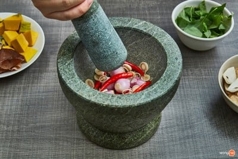
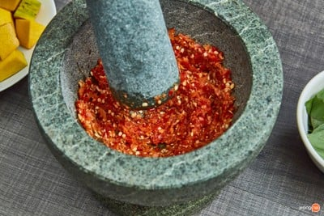
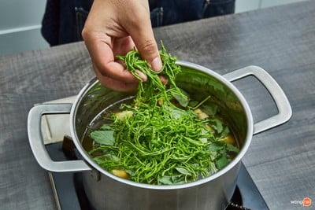

วิธีทำ “แกงเปรอะ” เมนูต้มทำง่าย ผักแน่น สารอาหารเพียบ!
ชวนเข้าครัวทำเมนูต้มสไตล์อีสานอย่างเมนู “แกงเปรอะ” เมนูผักแน่น ๆ กินกับข้าวสวยร้อน ๆ
แซ่บอย่าบอกใครเชียว ถ้าพร้อมแล้ว อย่ามัวรอช้าไปดูกันเลย!

วัตถุดิบเมนู “แกงเปรอะ”
วัตถุดิบ
- 1. หน่อไม้หั่น 1 ถ้วย
- 2. ตะไคร้ซอย 2 หัว
- 3. หอมแดง 5 หัว
- 4. พริกแดง 50 กรัม
- 5. ข้าวเบือ ¼ ถ้วย
- 6. น้ำใบย่านาง 5 ถ้วย
- 7. น้ำปลา 2 ช้อนโต๊ะ
- 8. น้ำปลาร้าต้มสุก ¼ ถ้วย
- 9. ใบแมงลัก 1 กำมือ
- 10. ชะอมเด็ด 1 กำมือ
- 11. เห็ดหูหนู 1 กำมือ
- 12. ฟักทองหั่นชิ้น 1 ถ้วย
- 13. เห็ดฟาง 1 ถ้วย
- 14. เห็ดนางฟ้า 1 ถ้วย
- 15. บวบหั่นชิ้น 1 ถ้วย
วิธีทำ แกงเปรอะ
STEP 1 :สับมะละกอ

โขลกตะไคร้ซอย หอมแดง และพริกแดง

โขลกจนละเอียด
STEP 2 :ต้ม
นำหม้อขึ้นตั้งไฟปานกลาง เทน้ำใบย่านางลงไป และรอจนเดือด
ใส่หน่อไม้ ฟักทองหั่นชิ้น เห็ดหูหนู เห็ดฟาง เห็ดนางฟ้า
และบวบหั่นชิ้น จากนั้นต้มจนผักสุก
STEP 3 : จัดเสิร์ฟ

ใส่ใบแมงลัก และชะอมเด็ดลงไป
ตักใส่ชามพร้อมเสิร์ฟจ้า
เป็นยังไงกันบ้าง กับเมนู “แกงเปรอะ” เมนูต้มสไตล์อีสาน ที่ทำง่ายแสนง่าย แถมสารอาหารยังเพียบอีกด้วย ถ้าได้กินกับข้าวสวยร้อน ๆ คงแซ่บน่าดู ถ้าเพื่อน ๆ
ชอบเมนูอาหารไทยโบราณแบบนี้ ไม่ต้องกลัวค่ะว่าจะหากินยาก เพราะแต่ละเมนูไม้ได้ยาก